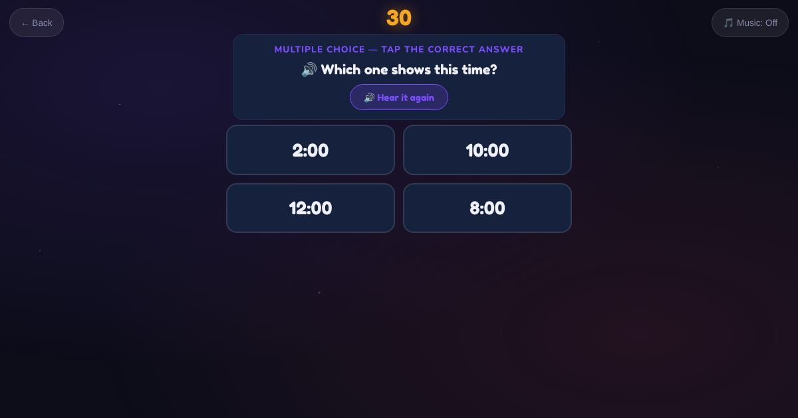

For teachers and tutors
About Digital Time
Digital time, as on phones, tickets and appointment cards. The learner hears a time and taps the matching digital time, or types it in numbers. It includes whole hours, quarter hours and AM and PM.

How to play
- Listen to the time.
- Tap the matching time, or type it.
- Check it.
Play it as a class
Choose Digital Time in the Teacher Game.